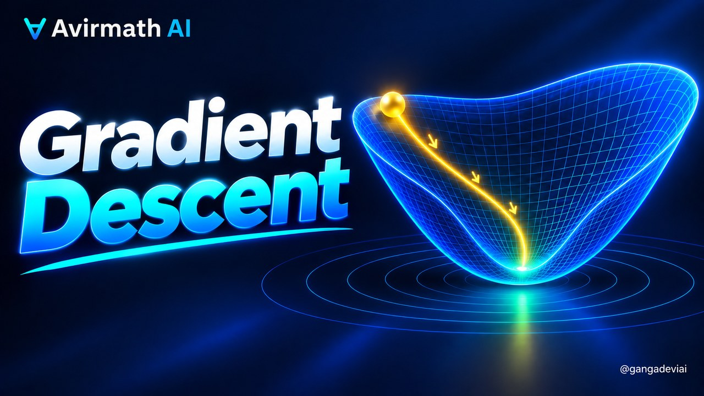
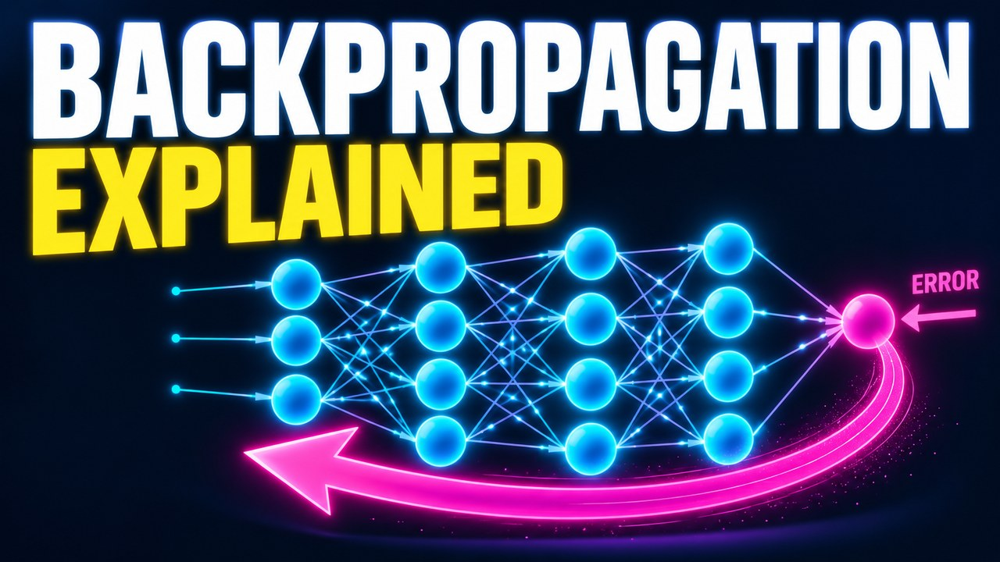

Softmax and Cross-Entropy in Machine Learning: Multi-Class Diagnosis on Real Patient Data, Lung-Cancer Screening and Language Models
A real decision and its data
Let me start in a dermatology clinic. A patient comes in with a red, scaly rash, and six different diseases can look almost identical on the skin: psoriasis, seborrheic dermatitis, lichen planus, pityriasis rosea, chronic dermatitis and pityriasis rubra pilaris. Telling them apart matters, because the treatments differ. The data we will use is real: 366 patients from a university hospital, published in Artificial Intelligence in Medicine in nineteen ninety-eight, with 34 findings recorded for each patient and the confirmed diagnosis.
Look at what the table contains. Twelve of the findings are clinical, things the doctor sees and asks, such as itching, scaling and family history, each graded from zero to three. Twenty-two come from a biopsy examined under the microscope. The target column has six possible values, not two, and that is exactly the situation softmax was made for. We will train on 293 patients and keep 73 hidden for the test.
Which output layer, when
So which output layer, and which loss? If the answer is one of two, a loan going bad or not, the sigmoid and the two-class cross-entropy from the regression lesson are enough. If the answer is one of several, six diagnoses or a thousand image classes, you need softmax, which turns a score per class into a probability per class, with cross-entropy generalised to many classes. And if the answer is one of fifty thousand, the next word a language model should write, it is still softmax, just with fifty thousand bars.
The second question is whether the probabilities themselves will be used. If a doctor or a screening programme acts on the number, ninety percent must mean ninety percent, so calibration has to be checked before deployment. If the inputs are images or free text, a convolutional or Transformer network will learn the features, but its last layer is this same softmax with this same loss, so everything we build here carries over unchanged.
Softmax, by hand
Let us build softmax on three scores small enough to do by hand: two, one, and zero point one. Step one: raise e to each. e to the two is 7.39, e to the one is 2.72, and e to the zero point one is 1.11. Every bar is now positive, and the gaps between them have grown.
Step two: divide by the total, 11.21. The shares are 66 percent, 24 percent, and 10 percent. They add to one hundred, and the order is preserved. That is softmax: exponentiate, then normalise.
Divide the scores by a temperature first, and you control how decisive the model is. Cold, at zero point three, the winner takes 96 percent. Hot, at five, the shares flatten to 40, 33 and 27. Same scores, different confidence, and we will meet this dial again when we calibrate a model.
One property every library relies on. Add the same constant to all the scores, and softmax does not change, because the constant cancels top and bottom. So before exponentiating, subtract the largest score. Without that, e to the seven hundred and ten overflows a computer's number format; with it, the biggest exponent is always zero.
And with just two classes, softmax collapses to a function you have met: the sigmoid of the difference of the two scores. Logistic regression is softmax with two bars.
Cross-entropy, by hand
Now the loss. The surprise of an event with probability p is minus the log of p. Certain, zero surprise. A coin flip, 0.693. A one-in-ten event, 2.3. Cross-entropy charges the model the surprise of the true answer, and nothing else: minus the log of the probability it gave to the truth.
Our model said 66 percent for the first class, and that class is the truth. The loss is minus the log of 0.659, which is 0.417. Had it said ten percent, the loss would have been two point three; had it said ninety-nine, almost nothing. Confident and right is cheap. Confident and wrong is ruinous.
The name comes from information theory. Cross-entropy equals the entropy of the truth plus the Kullback-Leibler divergence from the truth to the prediction. For a single correct label the entropy is zero, so minimising cross-entropy is exactly minimising the divergence: making the prediction match the truth.
The gradient: prediction minus truth
Here is the reason these two are always paired. Differentiate the loss with respect to the scores. The derivative of softmax is messy on its own, p i times delta i j minus p j. But push it through minus the log, and everything cancels. The gradient is p minus y: prediction minus truth.
With our numbers: the prediction is 0.659, 0.242, 0.099; the truth is one, zero, zero. So the gradient is -0.341, 0.242, 0.099. Push the true class's score up, push the others down, each by exactly how much it was over-believed.
Take four gradient steps on the scores and the true class's share rises to 0.885; the loss falls from 0.417 to 0.122. This is the line where backpropagation begins in every classifier: the error signal at the output is simply p minus y.
Softmax on a real job: six diagnoses
Now the real job. We standardise the 34 findings, give each of the six diseases its own row of weights, and train by gradient descent on exactly the loss and gradient we just derived. The mean cross-entropy on the training patients falls from 1.792, which is the log of six, the loss of pure guessing, to 0.02.
Did it work? On the 73 patients the model has never seen it is right 71 times, 97 percent, and the correct diagnosis is always in its top two. The original authors reported about 96.2 percent with their own method in nineteen ninety-eight, so a softmax regression with the right loss is already at the published standard. The confusion matrix shows where the few mistakes fall, and even the rarest disease, with only 20 patients in the whole set, is recognised.
Here is one real patient from the test set, aged 48. The model gives 53 percent to chronic dermatitis and 46 percent to pityriasis rosea, a close call, and the confirmed diagnosis is chronic dermatitis. That is the readout a clinician wants: not a single label, but the probabilities, so that a near tie is visible and a second test can be ordered.
At enterprise scale: a screening network and a language model
At enterprise scale the same layer sits at the end of much bigger networks. Google's lung-cancer screening model, published in Nature Medicine in twenty nineteen, reads a chest C.T. with a three-dimensional convolutional network and ends in a softmax over two outcomes. It reached an area under the curve of 94.4 percent on 6,716 scans from the National Lung Screening Trial, and without a prior scan it made 11 percent fewer false positives and 5 percent fewer false negatives than six radiologists. The probability from that softmax sets who is called back.
And a language model is a classifier over its vocabulary. GPT-two ends in a softmax over 50,257 tokens, trained by cross-entropy on the next word; e to that loss is the perplexity quoted in every model report, and a temperature divides the scores before the softmax to make the model more or less decisive. Same formula, fifty thousand bars.
When it fails: four things to check
Now, when it fails. First, over-confidence. Train the same model for much longer without any regularisation and its average confidence creeps up to 98.7 percent while its accuracy slips to 96 percent; the calibration error more than doubles, from 0.018 to 0.041. Large deep networks do this far more severely, which is why temperature scaling, a single number dividing the scores, is fitted on held-out data before a medical model is deployed.
Second, the inputs you will not have. Train on the twelve clinical findings alone, as in a clinic that cannot do a biopsy, and accuracy falls from 97 to 92 percent. A model is only as good as the inputs available at the moment of the decision, so check which columns will actually exist in production.
Third, label noise. Flip twenty percent of the training diagnoses at random, the kind of error that creeps into real records, and the test accuracy drops from 97 to 86 percent. Cross-entropy trusts every label completely, so the quality of the labels is the ceiling on the model.
Fourth, the hidden second. The top label hides how close the race was. In our small test set one patient had two diseases within a few points of each other, and in a large deployment that will be hundreds. Report the probabilities, flag the near ties, and let a person look.
The checklist
So here is the checklist. Two answers, sigmoid; several, softmax; thousands, still softmax. Subtract the maximum before exponentiating. Train with cross-entropy, whose gradient is prediction minus truth. Judge the model on patients it has never seen, with accuracy, the confusion matrix and the top-two rate.
Then check the four failures: calibrate the confidence on held-out data, train only on inputs that will exist at decision time, audit the labels, and report the probabilities rather than a single label. Do that, and you have built what a diagnostic model and a language model both end with. Next: linear and logistic regression, where we trace this neuron to its root.
Assessment
Answer each question in your own words, then reveal the model answer. Every answer comes from the lesson's verified mathematics.
When do I need softmax instead of a sigmoid?
Show answer
What does cross-entropy measure?
Show answer
How well does softmax regression do on the dermatology dataset?
Show answer
What is calibration and why does it matter in medicine?
Show answer
How does a lung-cancer screening model use softmax?
Show answer
What are the main ways a softmax classifier fails in practice?
Show answer
Sources
- H. A. Guvenir, G. Demiroz, N. Ilter, Learning differential diagnosis of erythemato-squamous diseases using voting feature intervals, Artificial Intelligence in Medicine 13(3), 147-165, 1998; UCI Dermatology dataset (CC BY 4.0), 366 patients, 34 attributes, 6 classes; the 96.2 percent figure is as reported by later studies citing the paper
- D. Ardila et al., End-to-end lung cancer screening with three-dimensional deep learning on low-dose chest computed tomography, Nature Medicine 25, 954-961 (2019): 94.4% AUC on 6,716 NLST cases; 11% fewer false positives and 5% fewer false negatives than six radiologists without prior imaging
- C. Guo, G. Pleiss, Y. Sun, K. Q. Weinberger, On Calibration of Modern Neural Networks, ICML 2017 (temperature scaling, expected calibration error)
- A. Radford et al., Language Models are Unsupervised Multitask Learners (GPT-2), 2019: byte-pair vocabulary of 50,257 tokens
- J. S. Bridle, Probabilistic interpretation of feedforward classification network outputs, 1989/1990 (the name 'softmax')
Keep reading

What Is Gradient Descent? From Cauchy's Orbits (1847) to Training AI
+ When no formula gives the answer, measure your error, find the direction in which it grows fastest, and step the opposite way; repeat. That procedure, from 1847, trains nearly every neural network today.

What Is Backpropagation? The Chain Rule That Trains Every Neural Network
+ Backpropagation is the chain rule organised so that one backward sweep gives the derivative of the error with respect to every weight at once — the gradient that gradient descent needs.
What Is a Vector, and What Is the Dot Product? The Geometry Inside Every AI Model
+ A vector is a list of numbers that is also an arrow, and the dot product is the one number that says how much two arrows agree. Every neuron, every embedding lookup and every attention score is a dot product.